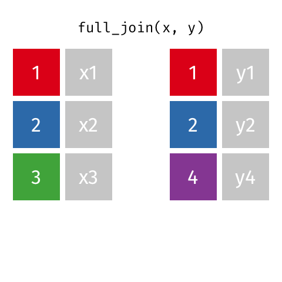

Joining data
Extended Materials
You can find the original, extended version of this chapter here.
Above: an animated example of a left join (image source)
This page describes ways to “join”, “match”, “link” “bind”, and otherwise combine data frames.
It is uncommon that your epidemiological analysis or workflow does not involve multiple sources of data, and the linkage of multiple datasets. Perhaps you need to connect laboratory data to patient clinical outcomes, or Google mobility data to infectious disease trends, or even a dataset at one stage of analysis to a transformed version of itself.
In this page we demonstrate code to:
- Conduct joins of two data frames such that rows are matched based on common values in identifier columns
- Join two data frames based on probabilistic (likely) matches between values
- Expand a data frame by directly binding or (“appending”) rows or columns from another data frame
Example datasets
In the joining section below, we will use the following datasets:
- A “miniature” version of the case
linelist, containing only the columnscase_id,date_onset, andhospital, and only the first 10 rows
- A separate data frame named
hosp_info, which contains more details about each hospital
In the section on probabilistic matching, we will use two different small datasets. The code to create those datasets is given in that section.
“Miniature” case linelist
Below is the the miniature case linelist, which contains only 10 rows and only columns case_id, date_onset, and hospital.
linelist_mini <- linelist %>% # start with original linelist
select(case_id, date_onset, hospital) %>% # select columns
head(10) # only take the first 10 rowsHospital information data frame
Below is the code to create a separate data frame with additional information about seven hospitals (the catchment population, and the level of care available). Note that the name “Military Hospital” belongs to two different hospitals - one a primary level serving 10000 residents and the other a secondary level serving 50280 residents.
# Make the hospital information data frame
hosp_info = data.frame(
hosp_name = c("central hospital", "military", "military", "port", "St. Mark's", "ignace", "sisters"),
catchment_pop = c(1950280, 40500, 10000, 50280, 12000, 5000, 4200),
level = c("Tertiary", "Secondary", "Primary", "Secondary", "Secondary", "Primary", "Primary")
)Here is this data frame:
Pre-cleaning
Traditional joins (non-probabilistic) are case-sensitive and require exact character matches between values in the two data frames. To demonstrate some of the cleaning steps you might need to do before initiating a join, we will clean and align the linelist_mini and hosp_info datasets now.
Identify differences
We need the values of the hosp_name column in the hosp_info data frame to match the values of the hospital column in the linelist_mini data frame.
Here are the values in the linelist_mini data frame, printed with the base R function unique():
unique(linelist_mini$hospital)[1] "Other"
[2] "Missing"
[3] "St. Mark's Maternity Hospital (SMMH)"
[4] "Port Hospital"
[5] "Military Hospital" and here are the values in the hosp_info data frame:
unique(hosp_info$hosp_name)[1] "central hospital" "military" "port" "St. Mark's"
[5] "ignace" "sisters" You can see that while some of the hospitals exist in both data frames, there are many differences in spelling.
Align values
We begin by cleaning the values in the hosp_info data frame. We can re-code values with logical criteria using dplyr’s case_when() function. For the four hospitals that exist in both data frames we change the values to align with the values in linelist_mini. The other hospitals we leave the values as they are (TRUE ~ hosp_name).
CAUTION: Typically when cleaning one should create a new column (e.g. hosp_name_clean), but for ease of demonstration we show modification of the old column
hosp_info <- hosp_info %>%
mutate(
hosp_name = case_when(
# criteria # new value
hosp_name == "military" ~ "Military Hospital",
hosp_name == "port" ~ "Port Hospital",
hosp_name == "St. Mark's" ~ "St. Mark's Maternity Hospital (SMMH)",
hosp_name == "central hospital" ~ "Central Hospital",
TRUE ~ hosp_name
)
)The hospital names that appear in both data frames are aligned. There are two hospitals in hosp_info that are not present in linelist_mini - we will deal with these later, in the join.
unique(hosp_info$hosp_name)[1] "Central Hospital"
[2] "Military Hospital"
[3] "Port Hospital"
[4] "St. Mark's Maternity Hospital (SMMH)"
[5] "ignace"
[6] "sisters" Prior to a join, it is often easiest to convert a column to all lowercase or all uppercase. If you need to convert all values in a column to UPPER or lower case, use mutate() and wrap the column with one of these functions from stringr.
str_to_upper()
str_to_upper()
str_to_title()
dplyr joins
The dplyr package offers several different join functions. dplyr is included in the tidyverse package. These join functions are described below, with simple use cases.
Many thanks to https://github.com/gadenbuie for the informative gifs!
General syntax
The join commands can be run as standalone commands to join two data frames into a new object, or they can be used within a pipe chain (%>%) to merge one data frame into another as it is being cleaned or otherwise modified.
In the example below, the function left_join() is used as a standalone command to create the a new joined_data data frame. The inputs are data frames 1 and 2 (df1 and df2). The first data frame listed is the baseline data frame, and the second one listed is joined to it.
The third argument by = is where you specify the columns in each data frame that will be used to aligns the rows in the two data frames. If the names of these columns are different, provide them within a c() vector as shown below, where the rows are matched on the basis of common values between the column ID in df1 and the column identifier in df2.
# Join based on common values between column "ID" (first data frame) and column "identifier" (second data frame)
joined_data <- left_join(df1, df2, by = c("ID" = "identifier"))If the by columns in both data frames have the exact same name, you can just provide this one name, within quotes.
# Joint based on common values in column "ID" in both data frames
joined_data <- left_join(df1, df2, by = "ID")If you are joining the data frames based on common values across multiple fields, list these fields within the c() vector. This example joins rows if the values in three columns in each dataset align exactly.
# join based on same first name, last name, and age
joined_data <- left_join(df1, df2, by = c("name" = "firstname", "surname" = "lastname", "Age" = "age"))The join commands can also be run within a pipe chain. This will modify the data frame being piped.
In the example below, df1 is is passed through the pipes, df2 is joined to it, and df is thus modified and re-defined.
df1 <- df1 %>%
filter(date_onset < as.Date("2020-03-05")) %>% # miscellaneous cleaning
left_join(df2, by = c("ID" = "identifier")) # join df2 to df1
Warning
Joins are case-specific! Therefore it is useful to convert all values to lowercase or uppercase prior to joining.
Left and right joins
A left or right join is commonly used to add information to a data frame - new information is added only to rows that already existed in the baseline data frame. These are common joins in epidemiological work as they are used to add information from one dataset into another.
In using these joins, the written order of the data frames in the command is important*.
- In a left join, the first data frame written is the baseline
- In a right join, the second data frame written is the baseline
All rows of the baseline data frame are kept. Information in the other (secondary) data frame is joined to the baseline data frame only if there is a match via the identifier column(s). In addition:
- Rows in the secondary data frame that do not match are dropped.
- If there are many baseline rows that match to one row in the secondary data frame (many-to-one), the secondary information is added to each matching baseline row.
- If a baseline row matches to multiple rows in the secondary data frame (one-to-many), all combinations are given, meaning new rows may be added to your returned data frame!
Animated examples of left and right joins (image source)

Example
Below is the output of a left_join() of hosp_info (secondary data frame, view here) into linelist_mini (baseline data frame, view here). The original linelist_mini has nrow(linelist_mini) rows. The modified linelist_mini is displayed. Note the following:
- Two new columns,
catchment_popandlevelhave been added on the left side oflinelist_mini
- All original rows of the baseline data frame
linelist_miniare kept
- Any original rows of
linelist_minifor “Military Hospital” are duplicated because it matched to two rows in the secondary data frame, so both combinations are returned
- The join identifier column of the secondary dataset (
hosp_name) has disappeared because it is redundant with the identifier column in the primary dataset (hospital)
- When a baseline row did not match to any secondary row (e.g. when
hospitalis “Other” or “Missing”),NA(blank) fills in the columns from the secondary data frame
- Rows in the secondary data frame with no match to the baseline data frame (“sisters” and “ignace” hospitals) were dropped
linelist_mini %>%
left_join(hosp_info, by = c("hospital" = "hosp_name"))Warning in left_join(., hosp_info, by = c(hospital = "hosp_name")): Detected an unexpected many-to-many relationship between `x` and `y`.
ℹ Row 5 of `x` matches multiple rows in `y`.
ℹ Row 4 of `y` matches multiple rows in `x`.
ℹ If a many-to-many relationship is expected, set `relationship =
"many-to-many"` to silence this warning.“Should I use a right join, or a left join?”
To answer the above question, ask yourself “which data frame should retain all of its rows?” - use this one as the baseline. A left join keep all the rows in the first data frame written in the command, whereas a right join keeps all the rows in the second data frame.
The two commands below achieve the same output - 10 rows of hosp_info joined into a linelist_mini baseline, but they use different joins. The result is that the column order will differ based on whether hosp_info arrives from the right (in the left join) or arrives from the left (in the right join). The order of the rows may also shift accordingly. But both of these consequences can be subsequently addressed, using select() to re-order columns or arrange() to sort rows.
# The two commands below achieve the same data, but with differently ordered rows and columns
left_join(linelist_mini, hosp_info, by = c("hospital" = "hosp_name"))
right_join(hosp_info, linelist_mini, by = c("hosp_name" = "hospital"))Here is the result of hosp_info into linelist_mini via a left join (new columns incoming from the right)
Warning in left_join(linelist_mini, hosp_info, by = c(hospital = "hosp_name")): Detected an unexpected many-to-many relationship between `x` and `y`.
ℹ Row 5 of `x` matches multiple rows in `y`.
ℹ Row 4 of `y` matches multiple rows in `x`.
ℹ If a many-to-many relationship is expected, set `relationship =
"many-to-many"` to silence this warning.Here is the result of hosp_info into linelist_mini via a right join (new columns incoming from the left)
Warning in right_join(hosp_info, linelist_mini, by = c(hosp_name = "hospital")): Detected an unexpected many-to-many relationship between `x` and `y`.
ℹ Row 4 of `x` matches multiple rows in `y`.
ℹ Row 5 of `y` matches multiple rows in `x`.
ℹ If a many-to-many relationship is expected, set `relationship =
"many-to-many"` to silence this warning.Also consider whether your use-case is within a pipe chain (%>%). If the dataset in the pipes is the baseline, you will likely use a left join to add data to it.
Full join
A full join is the most inclusive of the joins - it returns all rows from both data frames.
If there are any rows present in one and not the other (where no match was found), the data frame will include them and become longer. NA missing values are used to fill-in any gaps created. As you join, watch the number of columns and rows carefully to troubleshoot case-sensitivity and exact character matches.
The “baseline” data frame is the one written first in the command. Adjustment of this will not impact which records are returned by the join, but it can impact the resulting column order, row order, and which identifier columns are retained.

Animated example of a full join (image source)
Example
Below is the output of a full_join() of hosp_info (originally nrow(hosp_info), view here) into linelist_mini (originally nrow(linelist_mini), view here). Note the following:
- All baseline rows are kept (
linelist_mini)
- Rows in the secondary that do not match to the baseline are kept (“ignace” and “sisters”), with values in the corresponding baseline columns
case_idandonsetfilled in with missing values
- Likewise, rows in the baseline data frame that do not match to the secondary (“Other” and “Missing”) are kept, with secondary columns
catchment_popandlevelfilled-in with missing values
- In the case of one-to-many or many-to-one matches (e.g. rows for “Military Hospital”), all possible combinations are returned (lengthening the final data frame)
- Only the identifier column from the baseline is kept (
hospital)
linelist_mini %>%
full_join(hosp_info, by = c("hospital" = "hosp_name"))Warning in full_join(., hosp_info, by = c(hospital = "hosp_name")): Detected an unexpected many-to-many relationship between `x` and `y`.
ℹ Row 5 of `x` matches multiple rows in `y`.
ℹ Row 4 of `y` matches multiple rows in `x`.
ℹ If a many-to-many relationship is expected, set `relationship =
"many-to-many"` to silence this warning.Inner join
An inner join is the most restrictive of the joins - it returns only rows with matches across both data frames.
This means that the number of rows in the baseline data frame may actually reduce. Adjustment of which data frame is the “baseline” (written first in the function) will not impact which rows are returned, but it will impact the column order, row order, and which identifier columns are retained.

Animated example of an inner join (image source)
Example
Below is the output of an inner_join() of linelist_mini (baseline) with hosp_info (secondary). Note the following:
- Baseline rows with no match to the secondary data are removed (rows where
hospitalis “Missing” or “Other”)
- Likewise, rows from the secondary data frame that had no match in the baseline are removed (rows where
hosp_nameis “sisters” or “ignace”)
- Only the identifier column from the baseline is kept (
hospital)
linelist_mini %>%
inner_join(hosp_info, by = c("hospital" = "hosp_name"))Warning in inner_join(., hosp_info, by = c(hospital = "hosp_name")): Detected an unexpected many-to-many relationship between `x` and `y`.
ℹ Row 5 of `x` matches multiple rows in `y`.
ℹ Row 4 of `y` matches multiple rows in `x`.
ℹ If a many-to-many relationship is expected, set `relationship =
"many-to-many"` to silence this warning.Semi join
A semi join is a “filtering join” which uses another dataset not to add rows or columns, but to perform filtering.
A semi-join keeps all observations in the baseline data frame that have a match in the secondary data frame (but does not add new columns nor duplicate any rows for multiple matches). Read more about these “filtering” joins here.

Animated example of a semi join (image source)
As an example, the below code returns rows from the hosp_info data frame that have matches in linelist_mini based on hospital name.
hosp_info %>%
semi_join(linelist_mini, by = c("hosp_name" = "hospital")) hosp_name catchment_pop level
1 Military Hospital 40500 Secondary
2 Military Hospital 10000 Primary
3 Port Hospital 50280 Secondary
4 St. Mark's Maternity Hospital (SMMH) 12000 SecondaryAnti join
The anti join is another “filtering join” that returns rows in the baseline data frame that do not have a match in the secondary data frame.
Read more about filtering joins here.
Common scenarios for an anti-join include identifying records not present in another data frame, troubleshooting spelling in a join (reviewing records that should have matched), and examining records that were excluded after another join.
As with right_join() and left_join(), the baseline data frame (listed first) is important. The returned rows are from the baseline data frame only. Notice in the gif below that row in the secondary data frame (purple row 4) is not returned even though it does not match with the baseline.

Animated example of an anti join (image source)
Simple anti_join() example
For a simple example, let’s find the hosp_info hospitals that do not have any cases present in linelist_mini. We list hosp_info first, as the baseline data frame. The hospitals which are not present in linelist_mini are returned.
hosp_info %>%
anti_join(linelist_mini, by = c("hosp_name" = "hospital"))Complex anti_join() example
For another example, let us say we ran an inner_join() between linelist_mini and hosp_info. This returns only a subset of the original linelist_mini records, as some are not present in hosp_info.
linelist_mini %>%
inner_join(hosp_info, by = c("hospital" = "hosp_name"))Warning in inner_join(., hosp_info, by = c(hospital = "hosp_name")): Detected an unexpected many-to-many relationship between `x` and `y`.
ℹ Row 5 of `x` matches multiple rows in `y`.
ℹ Row 4 of `y` matches multiple rows in `x`.
ℹ If a many-to-many relationship is expected, set `relationship =
"many-to-many"` to silence this warning.To review the linelist_mini records that were excluded during the inner join, we can run an anti-join with the same settings (linelist_mini as the baseline).
linelist_mini %>%
anti_join(hosp_info, by = c("hospital" = "hosp_name"))To see the hosp_info records that were excluded in the inner join, we could also run an anti-join with hosp_info as the baseline data frame.
Binding and aligning
Another method of combining two data frames is “binding” them together. You can also think of this as “appending” or “adding” rows or columns.
This section will also discuss how to “align” the order of rows of one data frame to the order in another data frame. This topic is discussed below in the section on Binding columns.
Bind rows
To bind rows of one data frame to the bottom of another data frame, use bind_rows() from dplyr. It is very inclusive, so any column present in either data frame will be included in the output. A few notes:
- Unlike the base R version
row.bind(), dplyr’sbind_rows()does not require that the order of columns be the same in both data frames. As long as the column names are spelled identically, it will align them correctly.
- You can optionally specify the argument
.id =. Provide a character column name. This will produce a new column that serves to identify which data frame each row originally came from.
- You can use
bind_rows()on alistof similarly-structured data frames to combine them into one data frame.
One common example of row binding is to bind a “total” row onto a descriptive table made with dplyr’s summarise() function. Below we create a table of case counts and median CT values by hospital with a total row.
The function summarise() is used on data grouped by hospital to return a summary data frame by hospital. But the function summarise() does not automatically produce a “totals” row, so we create it by summarising the data again, but with the data not grouped by hospital. This produces a second data frame of just one row. We can then bind these data frames together to achieve the final table.
# Create core table
###################
hosp_summary <- linelist %>%
group_by(hospital) %>% # Group data by hospital
summarise( # Create new summary columns of indicators of interest
cases = n(), # Number of rows per hospital-outcome group
ct_value_med = median(ct_blood, na.rm=T)) # median CT value per groupHere is the hosp_summary data frame:
Create a data frame with the “total” statistics (not grouped by hospital). This will return just one row.
# create totals
###############
totals <- linelist %>%
summarise(
cases = n(), # Number of rows for whole dataset
ct_value_med = median(ct_blood, na.rm=T)) # Median CT for whole datasetAnd below is that totals data frame. Note how there are only two columns. These columns are also in hosp_summary, but there is one column in hosp_summary that is not in totals (hospital).
Now we can bind the rows together with bind_rows().
# Bind data frames together
combined <- bind_rows(hosp_summary, totals)Now we can view the result. See how in the final row, an empty NA value fills in for the column hospital that was not in hosp_summary. You could “fill-in” this cell with “Total” using replace_na().
Bind columns
There is a similar dplyr function bind_cols() which you can use to combine two data frames sideways. Note that rows are matched to each other by position (not like a join above) - for example the 12th row in each data frame will be aligned.
For an example, we bind several summary tables together. In order to do this, we also demonstrate how to re-arrange the order of rows in one data frame to match the order in another data frame, with match().
Here we define case_info as a summary data frame of linelist cases, by hospital, with the number of cases and the number of deaths.
# Case information
case_info <- linelist %>%
group_by(hospital) %>%
summarise(
cases = n(),
deaths = sum(outcome == "Death", na.rm=T)
)And let’s say that here is a different data frame contact_fu containing information on the percent of exposed contacts investigated and “followed-up”, again by hospital.
contact_fu <- data.frame(
hospital = c("St. Mark's Maternity Hospital (SMMH)", "Military Hospital", "Missing", "Central Hospital", "Port Hospital", "Other"),
investigated = c("80%", "82%", NA, "78%", "64%", "55%"),
per_fu = c("60%", "25%", NA, "20%", "75%", "80%")
)Note that the hospitals are the same, but are in different orders in each data frame. The easiest solution would be to use a left_join() on the hospital column, but you could also use bind_cols() with one extra step.
Use match() to align ordering
Because the row orders are different, a simple bind_cols() command would result in a mis-match of data. To fix this we can use match() from base R to align the rows of a data frame in the same order as in another. We assume for this approach that there are no duplicate values in either data frame.
When we use match(), the syntax is match(TARGET ORDER VECTOR, DATA FRAME COLUMN TO CHANGE), where the first argument is the desired order (either a stand-alone vector, or in this case a column in a data frame), and the second argument is the data frame column in the data frame that will be re-ordered. The output of match() is a vector of numbers representing the correct position ordering. You can read more with ?match.
match(case_info$hospital, contact_fu$hospital)[1] 4 2 3 6 5 1You can use this numeric vector to re-order the data frame - place it within subset brackets [ ] before the comma. The command below creates a new data frame, defined as the old one in which the rows are ordered in the numeric vector above.
contact_fu_aligned <- contact_fu[match(case_info$hospital, contact_fu$hospital),]Now we can bind the data frame columns together, with the correct row order. Note that some columns are duplicated and will require cleaning with rename(). Read more aboout bind_rows() here.
bind_cols(case_info, contact_fu)New names:
• `hospital` -> `hospital...1`
• `hospital` -> `hospital...4`# A tibble: 6 × 6
hospital...1 cases deaths hospital...4 investigated per_fu
<chr> <int> <int> <chr> <chr> <chr>
1 Central Hospital 454 193 St. Mark's … 80% 60%
2 Military Hospital 896 399 Military Ho… 82% 25%
3 Missing 1469 611 Missing <NA> <NA>
4 Other 885 395 Central Hos… 78% 20%
5 Port Hospital 1762 785 Port Hospit… 64% 75%
6 St. Mark's Maternity Hospital (… 422 199 Other 55% 80% A base R alternative to bind_cols is cbind(), which performs the same operation.